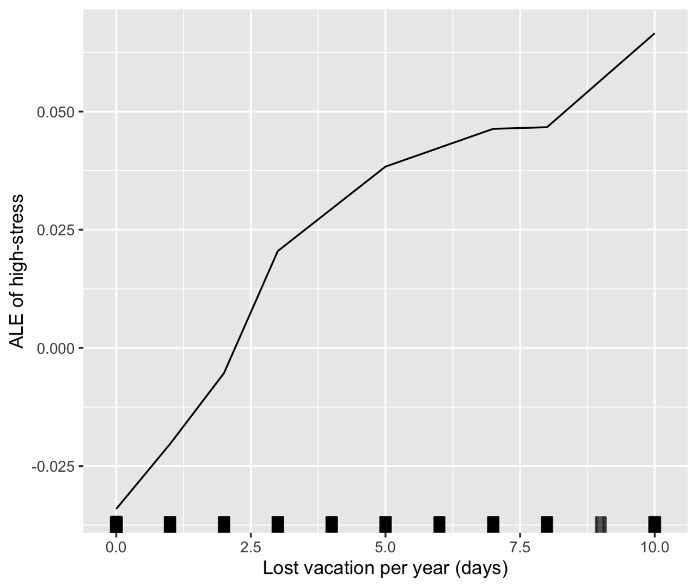

Midst our excitement about machine learning models, interpreting and explaining them may not be straightforward. Nevertheless, interpreting machine learning helps us assess whether the models meet criteria other than performance-related measures (Doshi-Velez & Kim, 2017). These criteria include safety, nondiscrimination, and providing the proper explanation. Accordingly, interpretability is instrumental in building end users’ and decision makers’ trust in machine learning models (Lakkaraju et al., 2016).
In my paiR program organized by RLadies Amsterdam, my learning partner and I chose interpretable machine learning as our topic. We decided to study together the first edition of the Interpretable Machine Learning book by Christoph Molnar, followed by an individual project applying concepts and tools explained in Molnar (2021).
About the Interpretable ML book
The book focuses on making supervised learning interpretable. In a nutshell, Molnar suggested three ways of making machine learning interpretable. One is using machine learning models that, by design, reveal their internal mechanisms. These models are also called white models or interpretable models. The yellow branch in the mind map below shows interpretable models.
Another approach is to use model-agnostic interpretable methods, shown by the orange branch of the mind map. If we have a black box, this orange branch approach is akin to a set of X-ray tools that help us look inside the black box.
The third approach is to select a few instances to explain the behavior of the machine-learning models. For that reason, this approach is known as the example-based approach, shown in the red branch. This red branch, like the orange branch, is model agnostic.
Three things to like about this book:
It helps us understand the nuance of interpretability. It turns out that interpretability is not a plain-vanilla concept. Early in the book, Molnar dedicated a chapter discussing the various point of view on interpretability.
It offers guidance on when to use a particular interpretability method. For that purpose, Molnar elaborated on the advantages and disadvantages of each interpretability method.
It includes implementation tips. For each interpretability method, Molnar informed readers what package to use, both in R and in python. He also provided concrete examples with source codes available on using
ilm, an interpretability package in R that he developed.
Applying methods for interpretable ML
The Authentic Happiness Project collected the data via an online survey and made the dataset available on Kaggle. This dataset contains 15,977 survey responses. I used the dataset’s ‘flow’ experience and stress level variables to assess well-being.
In psychology, ‘flow’ is defined as a mental state when a person is totally immersed in an activity that s/he is doing (Csikszentmihalyi, 1997). The person then experiences a feeling of energized focus, full involvement, and enjoyment in the process of this activity. Experiencing flow is one way to achieve well-being (Tse et al., 2021). In contrast, experiencing stress may dampen well-being. A higher level of perceived stress is associated with lower well-being (Hepburn et al., 2021).
I trained a regression model using the hours of flow a person experiences in a week as an outcome variable. Additionally, I trained a classification model to predict whether a person would be in the high-stress or low-stress category.
Insights from applying interpretability tools include:
A Partial Dependence Plot (PDP) shows that the more weekly meditation hours, the lower the probability that a person would be in a high-stress category. However, when weekly meditation reaches 7.5 hours per week, additional hours of meditation do not lower the probability further.

An Accumulated Local Effect (ALE) plot shows that the number of lost vacation days in a year is associated with higher predicted being in the high-stress category.
Local Surrogate (LIME) explanations for two instances in the dataset show that little time for passion and few remarkable achievements that he was proud of have a negative effect on the hours of flow experience in a week.
A figure shows Shapley values for a survey response, in this example, the 100th response. With a predicted 3.41 hours of flow experience, this response is 0.25 hours higher than the average prediction of 3.16 hours. No time for passion had the largest negative contribution. Social networks and the number of daily steps had a positive contribution.
I sincerely thank R-Ladies Amsterdam —especially Janine and Melissa, for organizing my paiR program; Ada —my learning partner, for the stimulating discussions; and Christoph Molnar for writing the book on interpretable machine learning and making it accessible. In the project listing, the photo for this post is courtesy of Conscious Design via Unsplash.